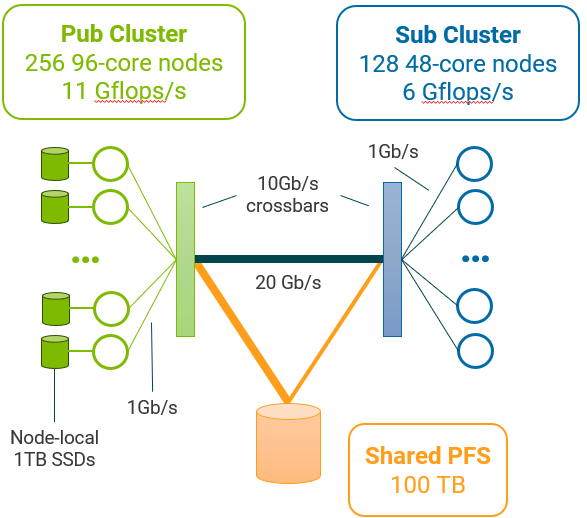

Describing your simulated platform
DTLMod relies on SimGrid’s C++ programmatic platform description interface to allow you to describe the computing and storage resources onto which simulate the execution of your in situ processing workflow.
To describe a platform in C++, the recommanded approach is to create a separate C++ file, compiled as a shared library,
in which you will overload the definition of the simgrid::s4u::Engine::load_platform() function. This way you
can decouple the definition of your platform from the code of your simulation. The generated shared library can then be
passed as a command line argument of your simulator binary.
extern "C" void load_platform(const simgrid::s4u::Engine& e);
void load_platform(const simgrid::s4u::Engine& e)
{
// Here goes your platform description
}
Describing Resources
NetZones
A netzone is a network container, in charge of routing information between computing resources (i.e., hosts) and to
the nearby netzones. In SimGrid, there is a hierarchy of netzones, with a unique root zone that you can retrieve
with simgrid::s4u::Engine::get_netzone_root().
To add a new netzone to the hierarchy, you must decide of the routing method you want to apply (e.g., empty, full, star, Floyd, Dijkstra, fatTree, torus, dragonfly). For instance, to create a compute cluster with a single crossbar switch, you can use the star routing method:
auto* cluster = e.get_netzone_root()->add_netzone_star("cluster");
Hereafter, we explain how to add resources to your platform. The different resources, such as hosts, disks, or
network links, follow the same idiom: add()->set()->set().
Hosts
A host models some physical resource with computing and networking capabilities on which simulated actors execute. They are minimally defined by a unique name and processing speed (expressed as a number of floating point operations per second). You can also further configure your hosts.
Hosts can be added to a netzone as follows:
for (int i = 0; i < 4; i++) {
std::string hostname = std::string("node-") + std::to_string(i);
auto* host = cluster->add_host(hostname, "1Gf");
}
Here we define four hosts named node-0, node-1, node-2, and node-3 each being able to process a
gigaflop per second.
Disks
A disk models some physical with I/O capabilities. They are minimally defined by a unique name, a read bandwidth and a write bandwidth (both expressed in bytes per seconds). By default, SimGrid does not keep track of the actual data being written but only computes the time taken by the corresponding data movement. The simulation of file systems is handled by FSMod (see Storage and file system).
Disks can be added to a host as follows:
auto* nvme = host->add_disk("node-0_nvme", "560MBps", "510MBps");
Links
A link represents the network facilities between hosts. They are minimally defined by a name and a bandwidth (expressed in bytes per second). You can further configure a link with a latency and a sharing policy. These can be combined into routes to model the interconnection network within and between zones.
For instance to connect each of the hosts of our four host cluster, we add the following code
const auto* backbone = cluster->add_link("backbone", "10Gbps")->set_latency("1ms");
auto* link_up = cluster->add_link(hostname + "_LinkUP", "1Gbps")->set_latency("2ms");
auto* link_down = cluster->add_link(hostname + "_LinkDOWN", "1Gbps")->set_latency("2ms");
auto* loopback = cluster->add_link(hostname + "_loopback", "1Gbps")->set_latency("1.75ms")
->set_sharing_policy(sg4::Link::SharingPolicy::FATPIPE);
cluster->add_route(host, nullptr, {sg4::LinkInRoute(link_up), sg4::LinkInRoute(backbone)}, false);
cluster->add_route(nullptr, host, {sg4::LinkInRoute(backbone), sg4::LinkInRoute(link_down)}, false);
cluster->add_route(host, host, {loopback});
Storage and file system
DTLMod relies on the on FSMod’s C++ programmatic description interface to allow you to describe storage components and file systems. For instance, to describe a one disk storage on the disk attached to host, start a file system on that storage and mount a partition, you have to add the following code:
auto local_nvme = simgrid::fsmod::OneDiskStorage::create(hostname + "_local_nvme", nvme);
auto local_fs = sgfs::FileSystem::create("local_fs", 100000000);
local_fs->mount_partition("/scratch/", local_nvme, "1TB");
// Register the file system to the NetZone it is in
simgrid::fsmod::FileSystem::register_file_system(cluster, local_fs);
Full example
The best way to build your C++ platform is to start from some examples. Each of the tests in our test suite begins with the definition of a small platform (of different complexity depending on the test).
Here, we present a complete example that corresponds to the platform used in the research paper introducing DTLMod.
{kind=link}
This simulated platform composed of two homogeneous clusters. The first cluster comprises 256 96-core nodes while the second cluster has 128 48-core nodes. Each core of these clusters can respectively process \(11 \times 10^9\) and \(6 \times 10^9\) floating point operations per second. These clusters have the same internal network topology: Nodes are connected through 1 Gb/s private network links to a 10 Gb/s crossbar switch. The two clusters are interconnected through a single 20 Gb/s network link.
Each node of the first cluster has a scratch space of 1 TB on a SSD disk whose read and write bandwidths are 560 MB/s and 510 MB/s respectively. Both clusters share access to a 100 TB file system whose read and write bandwidths are 180 MB/s and 160 MB/s respectively. The first cluster is connected to this remote file system through a 20 Gb/s network link, while the second cluster has a slower connection at 10 Gb/s.
/* Copyright (c) 2023. The SWAT Team. All rights reserved. */
/* This program is free software; you can redistribute it and/or modify it
* under the terms of the license (GNU LGPL) which comes with this package. */
#include <fsmod/FileSystem.hpp>
#include <fsmod/FileSystemException.hpp>
#include <fsmod/JBODStorage.hpp>
#include <fsmod/OneDiskStorage.hpp>
#include <simgrid/s4u.hpp>
namespace sg4 = simgrid::s4u;
namespace sgfs = simgrid::fsmod;
extern "C" void load_platform(const sg4::Engine& e);
void load_platform(const sg4::Engine& e)
{
auto* datacenter = e.get_netzone_root()->add_netzone_full("datacenter");
auto* pfs = datacenter->add_netzone_empty("pfs");
auto* pfs_server = pfs->add_host("pfs_server", "1Gf");
auto pfs_disk = pfs_server->add_disk("pfs_disk", "180MBps", "160MBps");
auto pfs_storage = sgfs::JBODStorage::create("pfs_storage", {pfs_disk});
pfs->seal();
auto* pub_cluster = datacenter->add_netzone_star("pub_cluster");
/* create the backbone link */
const auto* pub_backbone = pub_cluster->add_link("pub_backbone", "10Gbps")->set_latency("1ms");
std::vector<std::shared_ptr<sgfs::OneDiskStorage>> local_nvmes;
for (int i = 0; i < 256; i++) {
std::string hostname = std::string("node-") + std::to_string(i) + ".pub";
auto* host = pub_cluster->add_host(hostname, "11Gf")->set_core_count(96);
auto* nvme = host->add_disk(hostname + "_nvme", "560MBps", "510MBps");
local_nvmes.push_back(sgfs::OneDiskStorage::create(hostname + "_local_nvme", nvme));
auto* link_up = pub_cluster->add_link(hostname + "_LinkUP", "1Gbps")->set_latency("2ms");
auto* link_down = pub_cluster->add_link(hostname + "_LinkDOWN", "1Gbps")->set_latency("2ms");
auto* loopback = pub_cluster->add_link(hostname + "_loopback", "1Gbps")->set_latency("1.75ms")
->set_sharing_policy(sg4::Link::SharingPolicy::FATPIPE);
pub_cluster->add_route(host, nullptr, {sg4::LinkInRoute(link_up), sg4::LinkInRoute(pub_backbone)}, false);
pub_cluster->add_route(nullptr, host, {sg4::LinkInRoute(pub_backbone), sg4::LinkInRoute(link_down)}, false);
pub_cluster->add_route(host, host, {loopback});
}
pub_cluster->set_gateway(pub_cluster->add_router("pub_router"));
pub_cluster->seal();
auto* sub_cluster = datacenter->add_netzone_star("sub_cluster");
/* create the backbone link */
const auto* sub_backbone = sub_cluster->add_link("sub_backbone", "10Gbps")->set_latency("1ms");
for (int i = 0; i < 128; i++) {
std::string hostname = std::string("node-") + std::to_string(i) + ".sub";
auto* host = sub_cluster->add_host(hostname, "6Gf")->set_core_count(48);
auto* link_up = sub_cluster->add_link(hostname + "_LinkUP", "1Gbps")->set_latency("2ms");
auto* link_down = sub_cluster->add_link(hostname + "_LinkDOWN", "1Gbps")->set_latency("2ms");
auto* loopback = sub_cluster->add_link(hostname + "_loopback", "1Gbps")->set_latency("1.75ms")
->set_sharing_policy(sg4::Link::SharingPolicy::FATPIPE);
sub_cluster->add_route(host, nullptr, {sg4::LinkInRoute(link_up), sg4::LinkInRoute(sub_backbone)}, false);
sub_cluster->add_route(nullptr, host, {sg4::LinkInRoute(sub_backbone), sg4::LinkInRoute(link_down)}, false);
sub_cluster->add_route(host, host, {loopback});
}
sub_cluster->set_gateway(sub_cluster->add_router("sub_router"));
sub_cluster->seal();
const auto* inter_cluster_link = datacenter->add_link("inter-cluster", "20Gbps")->set_latency("1ms");
const auto* pub_pfs_link = datacenter->add_link("pub-pfs", "20Gbps")->set_latency("1ms");
const auto* sub_pfs_link = datacenter->add_link("sub-pfs", "10Gbps")->set_latency("1ms");
datacenter->add_route(pub_cluster, sub_cluster, {sg4::LinkInRoute(inter_cluster_link)});
datacenter->add_route(pub_cluster, pfs, {sg4::LinkInRoute(pub_pfs_link)});
datacenter->add_route(sub_cluster, pfs, {sg4::LinkInRoute(sub_pfs_link)});
auto remote_fs = sgfs::FileSystem::create("remote_fs", 100000000);
remote_fs->mount_partition("/pfs/", pfs_storage, "100TB");
sgfs::FileSystem::register_file_system(pfs, remote_fs);
auto local_fs = sgfs::FileSystem::create("local_fs", 100000000);
for (int i = 0; i < 256; i++) {
std::string partition_name = std::string("/node-") + std::to_string(i) + ".pub/scratch/";
local_fs->mount_partition(partition_name, local_nvmes.at(i), "1TB");
}
sgfs::FileSystem::register_file_system(pub_cluster, local_fs);
datacenter->seal();
}